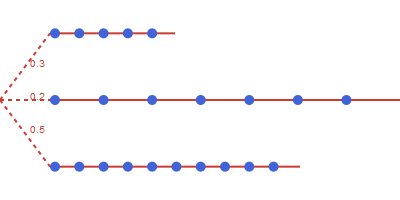

Operational time structures
SimpleTimes
The basic time structure is SimpleTimes which represents a continuous period of time divided into individual time periods of varying duration. The length of each time period is obtained by the duration(t) function.
julia> periods = SimpleTimes(5, [1, 1, 1, 5, 5]);julia> durations = [duration(t) for t in periods]5-element Vector{Int64}: 1 1 1 5 5

Calendar based
For some applications it is required to relate the time periods to actual calendar dates. This is supported by the time structure CalendarTimes that allows for creation and iteration of a calendar based sequence of periods in combination with calendar arithmetic.
The following example shows the creation of a time structure with 12 months starting from the first of January 2024. The duration of each time period is given in hours by default, but it is possible to specify the time units to use by providing the period type to use:
julia> using Datesjulia> year = CalendarTimes(DateTime(2024, 1, 1), 12, Month(1));julia> duration(first(year); dfunc = Dates.Day)31
You can also make the time structure for a specific time zone as shown in the following example with 3 days in the end of March with a transition to summer time on the second day:
julia> using TimeZonesjulia> periods = CalendarTimes(DateTime(2023, 3, 25), tz"Europe/Berlin", 3, Day(1));julia> duration.(periods)3-element Vector{Int64}: 24 23 24
Operational scenarios
Operations often face uncertain operating conditions. In energy systems modeling, a typical example is the availability of wind and solar power. One method for accounting for this uncertainty is to have multiple operational scenarios that are used to evaluate the cost and feasibility of operations, where each scenario has a given probability of occurring.
The time structure OperationalScenarios represents an unordered collection of operational scenarios where each scenario has a separate time structure and an associated probability.
julia> using TimeStruct, JuMPjulia> scenarios = OperationalScenarios( 3, [SimpleTimes(5,1), SimpleTimes(7,2), SimpleTimes(10,1)], [0.3, 0.2, 0.5] );

Similar to representative periods, each period has a multiple that is defined relative to the maximum duration for all scenarios. In addition, each time period has a probabilityequal to the probability of its scenario. Thus we have that:
julia> sum(duration(t) * probability(t) * multiple(t) for t in scenarios)13.999999999999996
Representative periods
In some cases, a fine-scale representation for the operations of the infrastructure of the whole time horizon, is not feasible. A possible strategy is then to select one or more representative periods and use them to evaluate operational cost and feasibility. The time structure RepresentativePeriods consists of an ordered sequence of representative periods that represents a longer period of time. Each representative period covers a specified share of the whole time period.
The following example shows an example with a year with daily resolution represented by two weeks with a share of 0.7 and 0.3 respectively.
julia> using JuMP, TimeStructjulia> periods = RepresentativePeriods( 2, 365, [0.7, 0.3], [SimpleTimes(7,1), SimpleTimes(7,1)] );
The time periods can be iterated both for the whole time structure and individually by each representative period using the repr_periods function. This is illustrated here when setting up a JuMP model with a separate constraint for each representative period:
julia> m = Model();julia> @variable(m, prod[periods] >= 0);julia> for rp in repr_periods(periods) @constraint(m, sum(prod[t] for t in rp) <= 10) endjulia> @constraint(m, sum(prod[t] * multiple(t) for t in periods) <= 1);
For each time period the multiple function returns how many times the given period should be counted when aggregating to the whole RepresentativePeriods structure. This will take into account both the duration and share of each representative period, thus we have that:
julia> sum(duration(t) * multiple(t) for t in periods)365.0000000000001